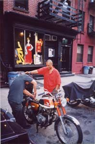

|
>origins project
origins This revolution required no agitators. Over the years the idea evolved in correspondence and conversation among a small group of movie-media producers and intellectuals. In the mid-1990s, mal proposed marketing videos called "look away tv" as an extension of the ambient revolution, but he found no backers. That work on "look away tv" became the foundation of "the blind eye project." But the blind eye project went beyond the ambient revolution by recognizing contemporary movie-media producers as the greatest seducers of all time. And by realizing that this continuous seduction in media called for its opposite. The original "look away tv" recognized this idea of reversal but not its implications. Then, in 1997, after a secret all-night conference of self-described media druids and moguls in a San Francisco mansion over the Pacific, willy mal formulated a critical departure in the blind eye manifesto. It was useless to deny the joys of perfectly attractive and diverse media. So why resist? Why? Because from inside the all absorbing mediasphere there is no way to observe it, no critical outpost from which to check its progress. Therefore, to gain such critical distance the blind eye project advocated total media reversal. A complete media logic flip.
|
 |
contact | deflect demo | exoptic preview